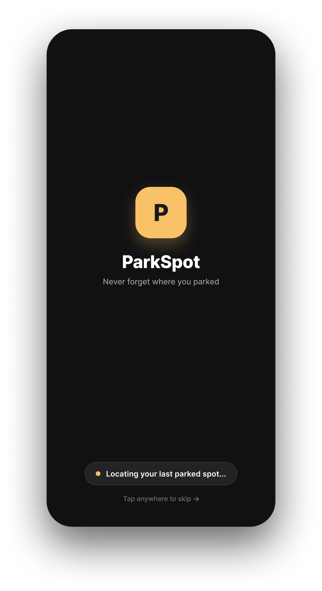
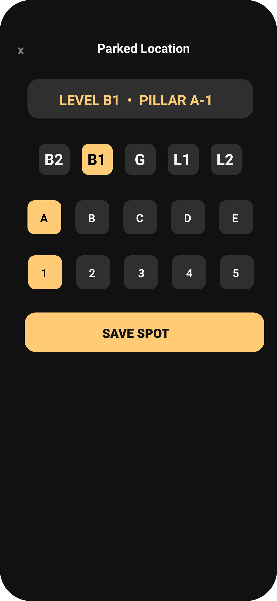

A simple parking-memory feature that helps users save their exact parking location and find their car when they're ready to leave.

In large parking areas, finding the car can become a memory game.
The problem wasn't parking the car.
It was remembering where it was left.
ParkSpot turns a parking location into three simple choices — then saves them as one clear reference.
One small interaction turns an easy-to-forget location into something the user can rely on later.
After parking, users select their level, pillar and spot, then save the location.

The user only needs to record the location once.
Once saved, ParkSpot keeps the location visible so the user doesn't have to rely on memory later.
When the user is ready to leave, they don't need to reconstruct the location from memory. They simply check the spot and head back to the car.
For darker parking areas.
For an additional visual reference.
ParkSpot reduces a forgotten location to one simple flow — record where you parked, keep it with you, and retrieve it when it's time to leave.
Explore the interactive prototype and experience the parking flow yourself.
View Prototype →ParkSpot started as a simple idea: help people remember where they parked. Designing the flow made me think more carefully about how little information a user actually needs at the right moment.
The user shouldn't have to describe their entire parking location. Level, pillar and spot are enough to create a useful reference.
Saving the location is only half of the experience. The real value appears later, when the user has forgotten the spot and needs the information again.
Because ParkSpot solves one specific problem, every interaction should stay focused on that problem. There's no need to turn a small utility into a complicated parking app.
I didn't design a parking system.
I designed a way to remember one small thing.